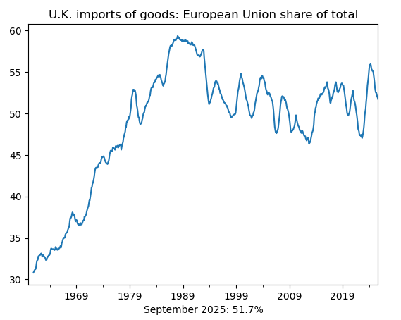

Part 1 showed a basic example of retrieving data. Here in Part 2, we explore how to discover available datasets and find the correct parameter codes using the sdmx1 library's dataflow() and codelist methods.
The dataflow() method returns information about all available datasets. We can search through these to find datasets of interest:
In[1]:
import sdmx
import pandas as pd
IMF_DATA = sdmx.Client('IMF_DATA')
# Get all dataflows
f = IMF_DATA.dataflow()
# Search for datasets containing "Trade"
{i: v for i, v in f.dataflow.items() if 'Trade' in v.name['en']}Out[1]:
{'ITG_WCA': <DataflowDefinition IMF.STA:ITG_WCA(2.0.4): International Trade in Goods, World and Country Aggregates>,
'CTOT': <DataflowDefinition IMF.RES:CTOT(5.0.1): Commodity Terms of Trade (CTOT)>,
'ITG': <DataflowDefinition IMF.STA:ITG(4.0.0): International Trade in Goods (ITG)>,
'TEG': <DataflowDefinition IMF.STA:TEG(3.0.2): Trade in Low Carbon Technology Goods (TEG)>,
'ITS': <DataflowDefinition IMF.RES:ITS(3.0.1): International Trade in Services (ITS)>,
'IMTS': <DataflowDefinition IMF.STA:IMTS(1.0.0): International Trade in Goods (by partner country) (IMTS)>}
The dictionary comprehension filters datasets whose English name contains "Trade". Each result shows the dataset ID (e.g., IMTS) and a description.
Once you identify a dataset, retrieve its structure to find the available dimensions. The dimensions determine how you construct the key for your data request:
In[2]:
# Get metadata for 'IMTS'
f = IMF_DATA.dataflow('IMTS')
dsd = f.structure['DSD_IMTS']
dsd.dimensions.componentsOut[2]:
[<Dimension COUNTRY>, <Dimension INDICATOR>, <Dimension COUNTERPART_COUNTRY>, <Dimension FREQUENCY>, <TimeDimension TIME_PERIOD>]
This tells us the IMTS dataset has four dimensions plus time: country, indicator, counterpart country (trading partner), and frequency. The key string must specify values for each dimension in this order.
Use the codelist attribute to find valid codes for each dimension. Here we look up available indicators:
In[3]:
# Indicator codes
codes = f.codelist.CL_IMTS_INDICATOR
sdmx.to_pandas(codes)Out[3]:
CL_IMTS_INDICATOR XG_FOB_USD Exports of goods, Free on board (FOB), US dollar MG_FOB_USD Imports of goods, Free on board (FOB), US dollar MG_CIF_USD Imports of goods, Cost insurance freight (CIF)... TBG_USD Trade balance goods, US dollar Name: International Trade in Goods (by partner country) (IMTS) Indicator, dtype: object
We can also search within a codelist. Here we find the code for "World" in the country list:
In[4]:
# Country codes - search for specific values
codes = f.codelist.CL_IMTS_COUNTRY
res = sdmx.to_pandas(codes)
res.loc[res.str.contains('World')]Out[4]:
CL_IMTS_COUNTRY G001 World Name: International Trade in Goods (by partner country) (IMTS) Country, dtype: object
Using what we've learned, let's calculate the European Union's share of UK goods imports over time. The key GBR.MG_CIF_USD.G001+G998.M requests UK imports from both World (G001) and EU (G998) at monthly frequency:
In[5]:
# Retrieve data: UK imports from World (G001) and EU (G998)
data_msg = IMF_DATA.data('IMTS', key='GBR.MG_CIF_USD.G001+G998.M')
# Convert to pandas
df = sdmx.to_pandas(data_msg).reset_index()
df = df.set_index(['TIME_PERIOD', 'COUNTERPART_COUNTRY'])['value'].unstack()
df.index = pd.to_datetime(df.index, format='%Y-M%m')
df = df.sort_index()With both series in our DataFrame, we can calculate the EU share and apply a 12-month moving average to smooth seasonal variation:
In[6]:
# Calculate EU share of UK imports of goods
eu_share = ((df['G998'] / df['G001']) * 100).rolling(12).mean()
# Create a line plot
title = "U.K. imports of goods: European Union share of total"
recent = f"{eu_share.index[-1].strftime('%B %Y')}: {eu_share.iloc[-1]:.1f}%"
ax = eu_share.plot(title=title)
ax = ax.set_xlabel(recent)Out[6]:

A few patterns that make working with the API more efficient:
USA.CPI._T.IX. (trailing dot, no frequency) returns annual, quarterly, and monthly data.startPeriod and endPeriod parameters accept month-level strings like '2024-01', not just years.import logging; logging.getLogger('sdmx').setLevel(logging.ERROR) to silence the xml.Reader diagnostic message.The sdmx1 library is a convenience wrapper around standard HTTP calls. If you prefer to avoid the dependency—or want to understand what's happening underneath—you can query the same API directly with requests. Ask for CSV format and you get a pandas-ready response:
In[7]:
import requests
import io
# The same CPI query from Part 1, without sdmx1
url = ("https://api.imf.org/external/sdmx/3.0/data/"
"dataflow/IMF.STA/CPI/~/"
"BRA+CHL+COL.CPI._T.IX.M"
"?c[TIME_PERIOD]=ge:2018-M01")
resp = requests.get(url, headers={"Accept": "text/csv"})
df = pd.read_csv(io.StringIO(resp.text))Out[7]:
288 rows, 3 countries
COUNTRY TIME_PERIOD OBS_VALUE
BRA 2018-M01 4930.72
BRA 2018-M02 4946.50
BRA 2018-M03 4950.95
BRA 2018-M04 4961.84
The URL follows a consistent pattern:
https://api.imf.org/external/sdmx/3.0/data/dataflow/{agency}/{dataflow}/{version}/{key}
• Agency: IMF.STA (Statistics Dept) or IMF.RES (Research Dept)
• Dataflow: CPI, WEO, BOP, IFS, etc.
• Version: ~ means "latest"
• Key: dimension values separated by dots; + joins multiple values
From here, the reshaping and calculation are the same as Part 1:
In[8]:
# Reshape and calculate inflation (same steps as Part 1)
result = df.set_index(['TIME_PERIOD', 'COUNTRY'])['OBS_VALUE'].unstack()
result.index = pd.to_datetime(result.index.str.replace('-M', '-'))
result = result.sort_index()
inflation = (result.pct_change(12) * 100).round(1).dropna()
inflation.tail(4)Out[8]:
COUNTRY BRA CHL COL 2025-09-01 5.2 4.4 5.2 2025-10-01 4.7 3.4 5.5 2025-11-01 4.5 3.4 5.3 2025-12-01 4.3 3.4 5.1
A few gotchas to watch for with direct API access:
~ for latest version. Using * causes a 500 error.?c[TIME_PERIOD]=ge:2018-M01 for the content constraint. The startPeriod parameter may not be supported on all endpoints.USA not US). Using an invalid code returns 200 with zero data rows—no error.2024-M01 rather than 2024-01, so a .str.replace('-M', '-') is needed before pd.to_datetime().Part 3 covers practical examples with popular datasets including economic forecasts, commodity prices, and accessing data from other providers.